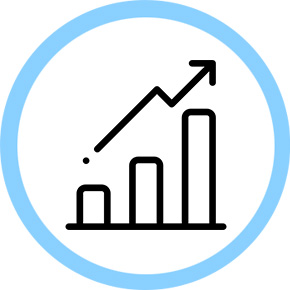
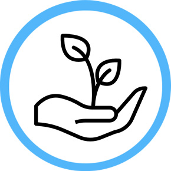
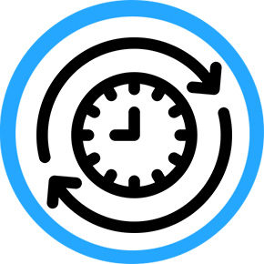
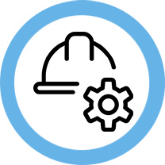
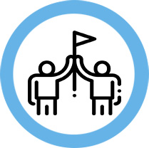
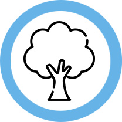
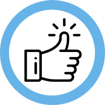

HOME > 회사소개 > 포스코엠텍 비전
포스코엠텍 소개
포스코엠텍 VISION
Always Happy POSCO M - TECH
철강포장및 소재 전문기업으로서
철강사업에 새로운 가치를 제공하고 시너지를 창출합니다
포스코엠텍 행동강령
-

- 가치지향
- 기업의 가치창출을 증대시키기 위해
최선을 다 하는 자세
-

- 고객지향
- 최고의 품질과 최상의 서비스를
제공함으로써 고객을 최우선으로
두는 기업문화
-

- 미래지향
- 도전적으로 실행하며
장기적인 관점에서 지속 가능한 성과를
창출하기 위해 학습하는 자세
핵심가치
-

- 안전
- 인간존중 철학을
바탕으로 언제나
안전을 최우선으로 함
-

- 상생
- 이윤 창출뿐만 아니라
고객, 임직원, 협력업체,
주주와 함께 발전하기
위해 노력함
-

- 사회공헌
- 기업시민으로서의
사회공헌에 적극적으로
참여함
-

- 투명
- 정직과 성실로써
맡은바 최선을 다하며,
건전한 조직문화를
창출함
포스코그룹 기업시민헌장
'더불어 함께 발전하는 기업시민' 경영이념 실현을 위한 지향점과 실전원칙
포스코그룹 기업시민헌장
기업의 경영활동은 사회를 기반으로 이루어지며, 사회와 조화를 통해 성장하고 영속할 수 있다.
우리는 사회의 자원을 활용하여 성장한 기업이 사회공동체의 일원으로서 경제적 이윤 창출을 넘어 사회문제 해결에 동참하고
인류의 번영과 더 나은 세상을 만들어 가는데 기여하는 것이 올바른 길이라고 믿는다.
포스코는 '더불어 함께 발전하는 기업시민' 경영이념하에 고객, 구성원, 주주 등 모든 이해관계자와 소통하고 공감하면서
끊임없이 변화하고 혁신하여 궁극적으로 더 큰 기업가치를 창출하며 지속 성장하고자 한다.
이에 기업시민 포스코는 모든 경영활동에 있어 다음 원칙을 준수한다.
하나, 비즈니스 파트너와 함께
강건한 산업 생태계를 조성한다.
강건한 산업 생태계를 조성한다.
- 모든 사업에서 공정 · 투명 · 윤리의 가치를 실천한다.
- 배려와 존중의 자세로 협력사, 공급사와 협업하고 동반성장한다.
- 최고의 제품과 서비스를 제공하여 고객성공을 지원한다.
둘, 사회문제 해결과
더 나은 사회 구현에 앞장선다.
더 나은 사회 구현에 앞장선다.
- 사회가 직면한 문제에 공감하고 기업차원의 역할을 다한다.
- 지역사회 발전과 환경보호를 위한 공익적 활동을 전개한다.
- 이웃을 배려하는 마음으로 모든 구성원이 나눔활동에 적극 참여한다.
셋, 신뢰와 창의의 조직문화로
행복하고 보람있는 회사를 만든다.
행복하고 보람있는 회사를 만든다.
- 안전하고 쾌적한 근무환경을 조성하여 구성원의 건강과 안녕을 도모한다.
- 공정한 인사와 안정적 노사관계로 신뢰와 화합의 조직문화를 선도한다.
- 다양성을 포용하고 일과 삶이 균형을 이루는 행복한 일터를 구현한다.
2019년 7월 25일 포 스 코